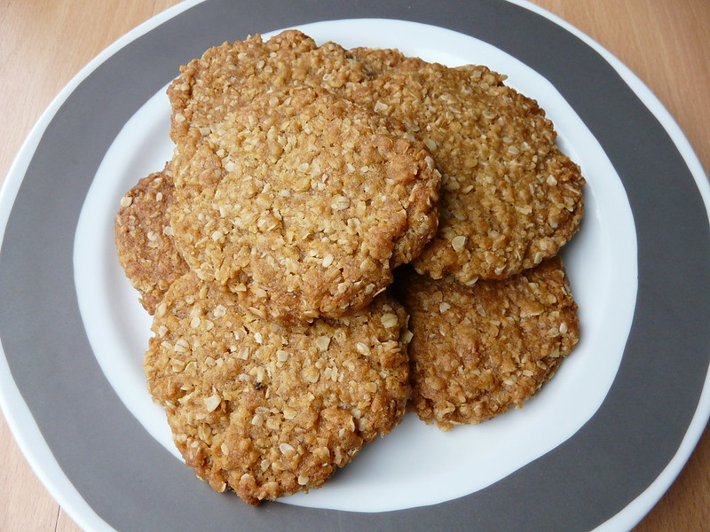

Anzac Biscuits

Anzac biscuits by Tristan Ferne, licensed under CC BY 2.0
Description
Nagi's ANZAC biscuits are great! Go to her site to see more detail and tips.
Ingredients
- 1 cup plain flour
- 1 cup rolled oats
- 1 cup desiccated coconut
- 3/4 cup white sugar
- 150g butter
- 4 tbsp golden syrup
- 1 tsp baking soda
Instructions
- Preheat oven to 180°C (fan-forced)
- Line 2 baking trays with baking paper
- Mix dry ingredients together
- Gently melt butter and golden syrup together in a saucepan
- Add baking soda to butter and syrup mixture and stir to combine. Remove from heat
- Pour butter mixture into flour mixture and mix until just combined
- Roll mixture into balls (about 1tbps worth each) and flatten into patties. Place on baking trays
- Bake for 15min
- Stand on trays for 5min then transfer to wire rack for cooling